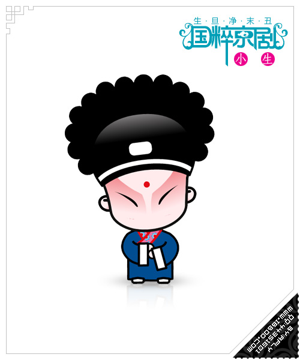
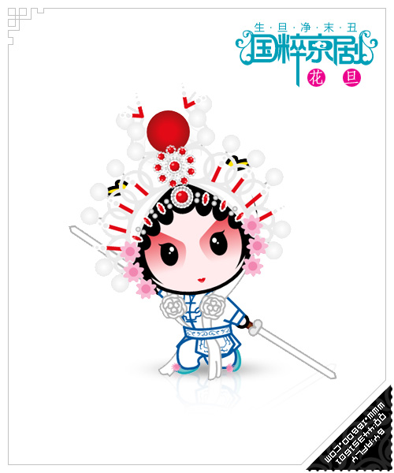

河南省
湖北省
黑龙江省
北京市
上海市
武汉市
前端与移动开发
爬虫工程师
java工程师
PHP工程师
后端工程师


1
2
3
4
5
6
7
8
9
10
11
12
13
14
15
16
17
18
19
20
21
22
23
24
25
26
27
28
29
30
31
32
33
34
35
中华人民共和国
中华人民共和国
中华人民共和国
中华人民共和国
中华人民共和国
中华人民共和国
中华人民共和国